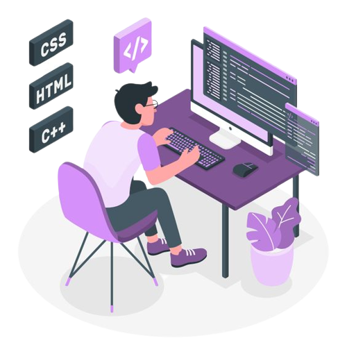

Hi, My name is Eshwar Mothe
and I am a

My Acadamic Excellences
SSC
(2014-2015)
(2014-2015)
I have did my metriculation from
Sri Venkateshwara Vidyaniketan High School
GPA: 8.20
GPA: 8.20
Intermediate
(2015-2017)
(2015-2017)
I did my intermediate in MPC(Maths,Physics,Chemistry) from Krishnaveni Vikas Junior
College, Godavarikhani
Percentage: 72.2%
Percentage: 72.2%
Under Graduation
(2017-2021)
(2017-2021)
After Completioin of intermediate I choose to do an UG course that is Bachelor of Science
(B.Sc) & Computer Science as main stream from Sri Chaitanya Degree & PG college,
Godavarikhani.
CGPA: 8.78
CGPA: 8.78
Post Graduation
(2021-2023)
(2021-2023)
I recently completed my MCA (Master of Computer Applications) from the
UCSS(University College of Science, Saifabad) Hyderabad.
CGPA: 7.20
CGPA: 7.20